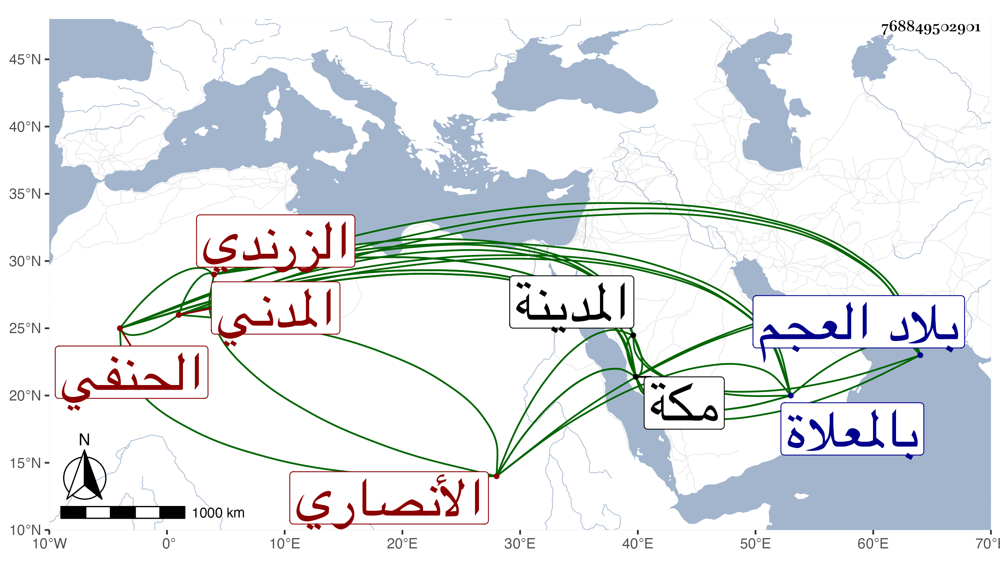

0902Sakhawi.DawLamic.ITO20230111-ara1.EIS1600.768849502901
Biography ID: 768849502901
955
سعيد بن محمد بن عبد الوهاب بن علي بن يوسف جمال الدين بن فتح الدين أبي الفتح الأنصاري الزرندي المدني الحنفي أخو سعد الماضي وهو أصغرهما حفظ الهداية واشتغل على أبي البقاء بن الضياء أو أخيه أبي حامد بمكة . وسمع على أبي الفتح المراغي وغيره ، وبرع في استحضار المذهب ودرس للطلبة ، وكان جيد الالقاء . وولي قضاء المدينة وحسبتها بعد أخيه بل باشر بعد موت أبيه سد الوظيفة لغيبة أخيه المتولي في بلاد العجم . ومات عن بضع وستين بمكة في جمادى الأولى سنة أربع وسبعين بعد أن أصيب بخلط ، ودفن بالمعلاة رحمه الله . وهو والد علي وأبي الفتح محمد الآتيين .
